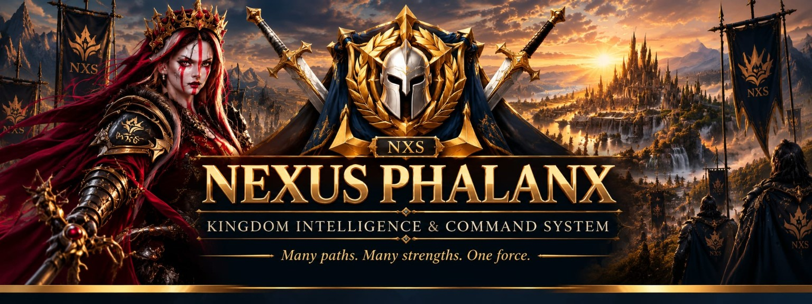

<!doctype html><html lang="de"><meta charset="utf-8"><meta name="viewport" content="width=device-width,initial-scale=1"><title>NEXUS PHALANX | Outpost Atlas · CORE V2</title><link rel="stylesheet" href="map.css"><header class="ph-header"></header><main><div class="ph-context"><span class="ph-context-title">OUTPOST ATLAS</span><small>KINGDOM #1885 · CORE V2</small><span class="ph-context-badge">TEST</span></div><div id="status">Lade die verifizierte Liste …</div><input id="q" placeholder="Suche: Name, Allianz, Koordinaten …"><div class="filters ph-freeze-filters" aria-label="Outpost-Filter">
<label class="ph-pill" data-key="a"><span class="ph-pill-label">♙  Allianz</span><select id="a" aria-label="Allianz"><option value="">Alle Allianzen</option></select></label>
<label class="ph-pill" data-key="quad"><span class="ph-pill-label">✧  Quadrant</span><select id="quad" aria-label="Quadrant"><option value="">Alle Quadranten</option><option>Nord</option><option>Ost</option><option>Süd</option><option>West</option></select></label>
<label class="ph-pill" data-key="type"><span class="ph-pill-label">♜  Typ</span><select id="type" aria-label="Gebäudetyp"><option value="">Alle Gebäudetypen</option></select></label>
<label class="ph-pill" data-key="level"><span class="ph-pill-label">▥ Level</span><select id="level" aria-label="Level"><option value="">Alle Level</option></select></label>
</div><div class="top"><small id="count">0 / 74</small><button id="reset">Filter zurücksetzen</button></div><div id="activeFilters" aria-live="polite" hidden></div><div id="noMatches" role="status" hidden>Keine passenden Outposts · Filter anpassen oder zurücksetzen.</div><div class="legend" id="legend"></div><div class="map"><svg viewBox="0 0 340 380" id="svg" aria-label="Gedrehte Koordinatenkarte"><g id="camera"></g></svg><div class="tools"><button id="zin">+</button><button id="zout">−</button><button id="home">⌂</button><button id="expandMap" title="Karte im Vollbild öffnen" aria-label="Karte im Vollbild öffnen">⛶</button></div></div><div id="detail" hidden></div><h3>Outpost-Liste</h3><div id="rows"></div><footer>Outpost Atlas · originaler Phalanx-Artwork-Header · ausgewählter Hintergrund · unveränderter Home-Design-Freeze · schreibgeschützt</footer></main><script type="module" src="map-core.js"></script><script src="map-layout.js" defer></script></html>